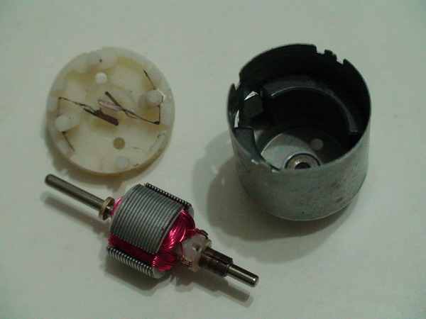
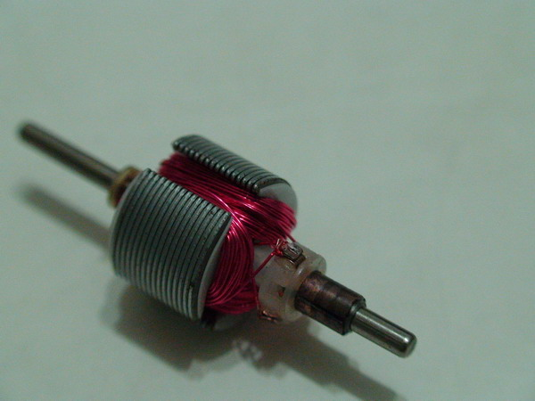
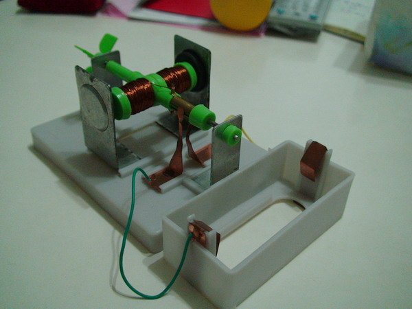

直流小馬達

↑這是一顆常見的小馬達，用在四驅車、小風扇。
小心的扳開旁邊的卡榫，就可以把它拆開。

↑直流馬達基本構造：永久磁鐵(右)，電刷(左上)，電樞(中)。

↑讓我們來仔細看看最重要的電樞：
1. 三組線圈，三片集電環，線圈間隙與及電環間隙沒有對齊。
2. 每組線圈的兩端連接在相鄰的兩片集電環。
3. 線圈的鐵芯是一片一片的，不是一整塊的。

↑小馬達會轉動的原理，和一般教學用電動機相同。不同的是，教學用的只有兩組線圈，
而且要轉之前要先用手撥一下。
想一想，小馬達不用撥就會轉的原理是什麼？
提示：趕快去買一個小馬達拆開來看。